第 9 章
阈值处理迈向数字情报
本章共 5 个小节 · threshold、Otsu、自适应阈值、位平面、数字水印
阈值处理会把像素值与指定临界值比较，再依规则改写像素。本章覆盖 cv2.threshold() 的多种类型、
Otsu 自动阈值、自适应阈值、位平面分解，以及把水印藏入最低有效位的做法。
9-1
threshold() 函数
threshold() 返回两个值：ret 是实际阈值，dst 是处理后的图像。
ret, dst = cv2.threshold(src, thresh, maxval, type)
| 类型 | 规则 |
|---|
cv2.THRESH_BINARY | 大于阈值设为 maxval，否则设为 0。 |
cv2.THRESH_BINARY_INV | BINARY 的反向版本。 |
cv2.THRESH_TRUNC | 大于阈值的像素被截断为阈值，小于等于阈值则保留。 |
cv2.THRESH_TOZERO | 大于阈值保留原值，否则设为 0。 |
cv2.THRESH_TOZERO_INV | TOZERO 的反向版本。 |
9-1-1 THRESH_BINARY
程序实例 ch9_1.py：随机数组的 BINARY 阈值处理
# ch9_1.py
import cv2
import numpy as np
src = np.random.randint(0, 256, size=(3, 5), dtype=np.uint8)
ret, dst = cv2.threshold(src, 127, 255, cv2.THRESH_BINARY)
print(f"src =\n{src}")
print(f"ret = {ret}")
print(f"dst =\n{dst}")
程序实例 ch9_2.py：灰度图像二值化
# ch9_2.py
import cv2
img = cv2.imread("jk.jpg", cv2.IMREAD_GRAYSCALE)
ret1, dst1 = cv2.threshold(img, 127, 255, cv2.THRESH_BINARY)
ret2, dst2 = cv2.threshold(img, 80, 255, cv2.THRESH_BINARY)
cv2.imshow("Original", img)
cv2.imshow("threshold 127", dst1)
cv2.imshow("threshold 80", dst2)
cv2.waitKey(0)
cv2.destroyAllWindows()
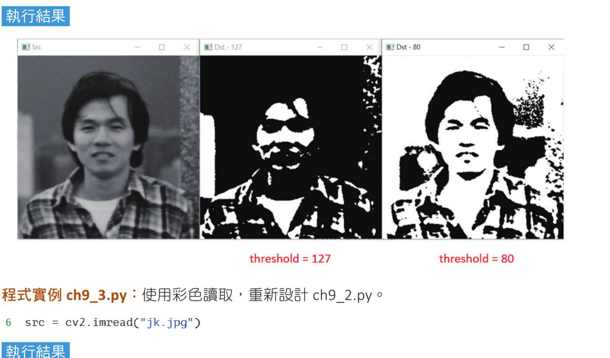
灰度图像使用不同阈值的二值化结果，参考原书第 9-3 页。
程序实例 ch9_3.py：彩色图像二值化
# ch9_3.py
import cv2
img = cv2.imread("jk.jpg")
ret, dst = cv2.threshold(img, 127, 255, cv2.THRESH_BINARY)
cv2.imshow("Original", img)
cv2.imshow("Result", dst)
cv2.waitKey(0)
cv2.destroyAllWindows()
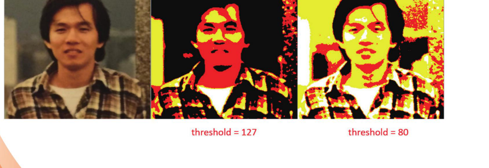
彩色图像逐通道二值化结果，参考原书第 9-4 页。
程序实例 ch9_4.py：numbers.jpg 数字图形二值化
# ch9_4.py
import cv2
img = cv2.imread("numbers.jpg", cv2.IMREAD_GRAYSCALE)
ret, dst = cv2.threshold(img, 127, 255, cv2.THRESH_BINARY)
cv2.imshow("Original", img)
cv2.imshow("Result", dst)
cv2.waitKey(0)
cv2.destroyAllWindows()
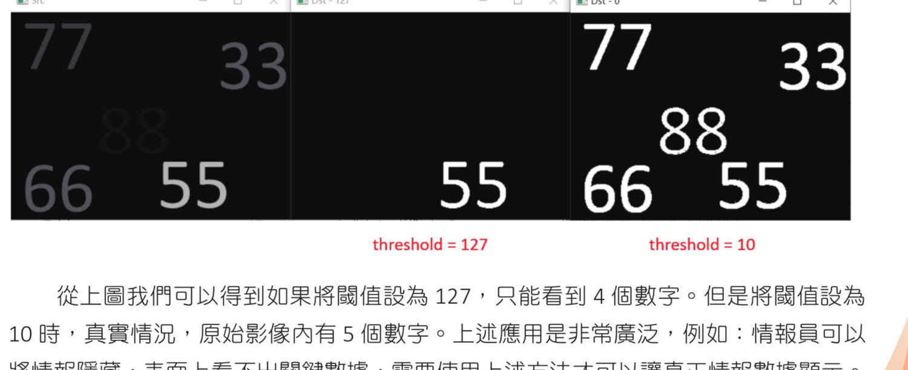
数字图形的二值化结果，参考原书第 9-5 页。
9-1-2 THRESH_BINARY_INV
程序实例 ch9_5.py：随机数组的 BINARY_INV
# ch9_5.py
import cv2
import numpy as np
src = np.random.randint(0, 256, size=(3, 5), dtype=np.uint8)
ret, dst = cv2.threshold(src, 127, 255, cv2.THRESH_BINARY_INV)
print(f"src =\n{src}")
print(f"dst =\n{dst}")
程序实例 ch9_6.py：灰度图像 BINARY_INV
# ch9_6.py
import cv2
img = cv2.imread("jk.jpg", cv2.IMREAD_GRAYSCALE)
ret, dst = cv2.threshold(img, 127, 255, cv2.THRESH_BINARY_INV)
cv2.imshow("Original", img)
cv2.imshow("Result", dst)
cv2.waitKey(0)
cv2.destroyAllWindows()
程序实例 ch9_7.py：彩色图像 BINARY_INV
# ch9_7.py
import cv2
img = cv2.imread("jk.jpg")
ret, dst = cv2.threshold(img, 127, 255, cv2.THRESH_BINARY_INV)
cv2.imshow("Original", img)
cv2.imshow("Result", dst)
cv2.waitKey(0)
cv2.destroyAllWindows()
程序实例 ch9_8.py：numbers.jpg 使用 BINARY_INV
# ch9_8.py
import cv2
img = cv2.imread("numbers.jpg", cv2.IMREAD_GRAYSCALE)
ret, dst = cv2.threshold(img, 127, 255, cv2.THRESH_BINARY_INV)
cv2.imshow("Original", img)
cv2.imshow("Result", dst)
cv2.waitKey(0)
cv2.destroyAllWindows()
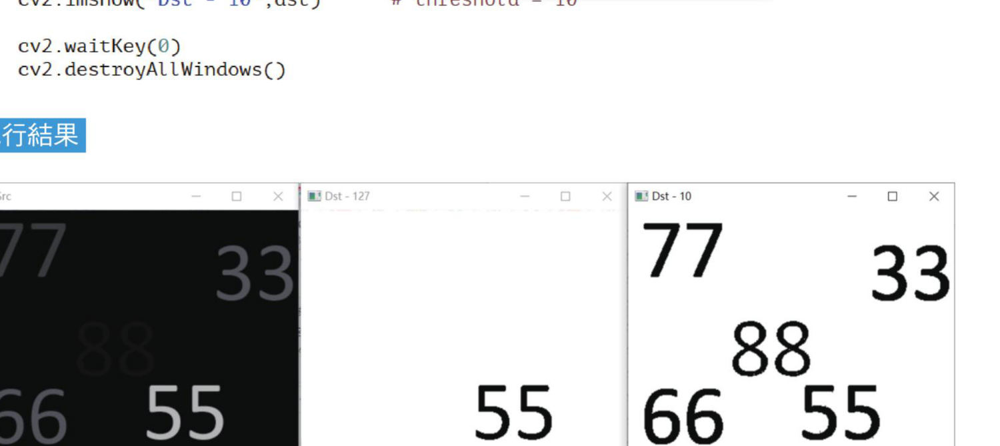
数字图形的反二值化结果，参考原书第 9-8 页。
9-1-3 THRESH_TRUNC
程序实例 ch9_9.py：随机数组的 TRUNC
# ch9_9.py
import cv2
import numpy as np
src = np.random.randint(0, 256, size=(3, 5), dtype=np.uint8)
ret, dst = cv2.threshold(src, 127, 255, cv2.THRESH_TRUNC)
print(f"src =\n{src}")
print(f"dst =\n{dst}")
程序实例 ch9_10.py：灰度图像 TRUNC
# ch9_10.py
import cv2
img = cv2.imread("jk.jpg", cv2.IMREAD_GRAYSCALE)
ret, dst = cv2.threshold(img, 127, 255, cv2.THRESH_TRUNC)
cv2.imshow("Original", img)
cv2.imshow("Result", dst)
cv2.waitKey(0)
cv2.destroyAllWindows()
程序实例 ch9_11.py：彩色图像 TRUNC
# ch9_11.py
import cv2
img = cv2.imread("jk.jpg")
ret, dst = cv2.threshold(img, 127, 255, cv2.THRESH_TRUNC)
cv2.imshow("Original", img)
cv2.imshow("Result", dst)
cv2.waitKey(0)
cv2.destroyAllWindows()
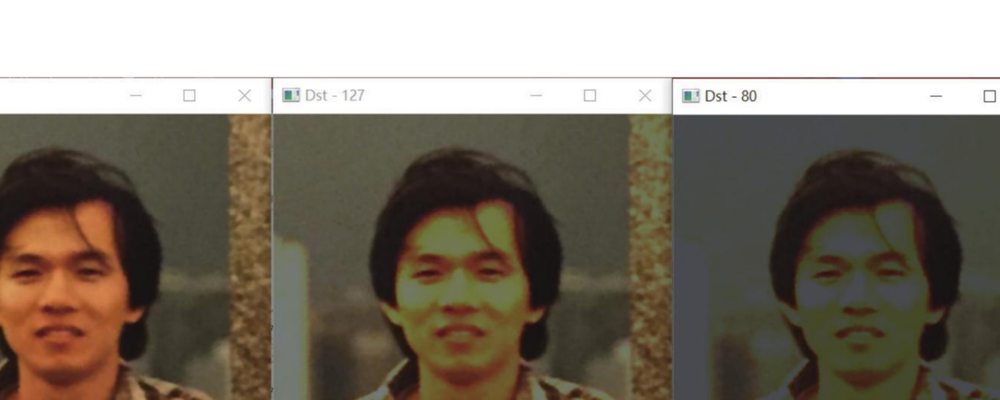
彩色图像使用 TRUNC 的结果，参考原书第 9-11 页。
9-1-4 THRESH_TOZERO
程序实例 ch9_12.py：随机数组的 TOZERO
# ch9_12.py
import cv2
import numpy as np
src = np.random.randint(0, 256, size=(3, 5), dtype=np.uint8)
ret, dst = cv2.threshold(src, 127, 255, cv2.THRESH_TOZERO)
print(f"src =\n{src}")
print(f"dst =\n{dst}")
程序实例 ch9_13.py：灰度图像 TOZERO
# ch9_13.py
import cv2
img = cv2.imread("jk.jpg", cv2.IMREAD_GRAYSCALE)
ret, dst = cv2.threshold(img, 127, 255, cv2.THRESH_TOZERO)
cv2.imshow("Original", img)
cv2.imshow("Result", dst)
cv2.waitKey(0)
cv2.destroyAllWindows()
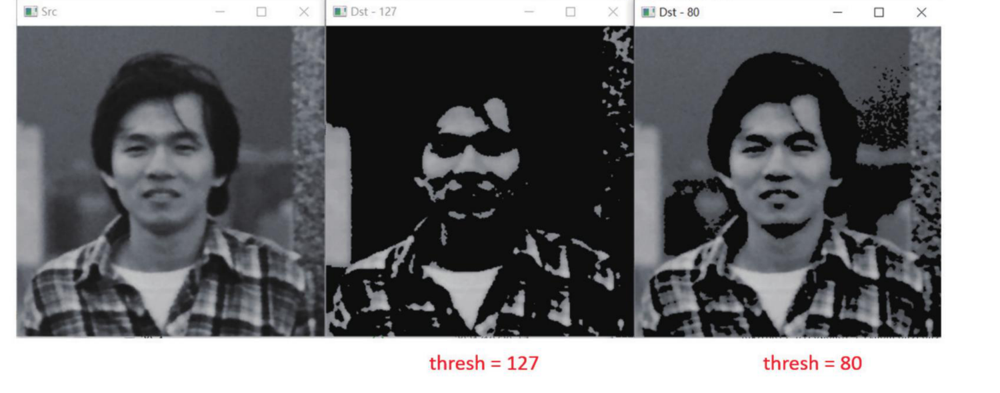
灰度图像使用 TOZERO 的结果，参考原书第 9-13 页。
程序实例 ch9_14.py：彩色图像 TOZERO
# ch9_14.py
import cv2
img = cv2.imread("jk.jpg")
ret, dst = cv2.threshold(img, 127, 255, cv2.THRESH_TOZERO)
cv2.imshow("Original", img)
cv2.imshow("Result", dst)
cv2.waitKey(0)
cv2.destroyAllWindows()
9-1-5 THRESH_TOZERO_INV
程序实例 ch9_15.py：随机数组的 TOZERO_INV
# ch9_15.py
import cv2
import numpy as np
src = np.random.randint(0, 256, size=(3, 5), dtype=np.uint8)
ret, dst = cv2.threshold(src, 127, 255, cv2.THRESH_TOZERO_INV)
print(f"src =\n{src}")
print(f"dst =\n{dst}")
程序实例 ch9_16.py：灰度图像 TOZERO_INV
# ch9_16.py
import cv2
img = cv2.imread("jk.jpg", cv2.IMREAD_GRAYSCALE)
ret, dst = cv2.threshold(img, 127, 255, cv2.THRESH_TOZERO_INV)
cv2.imshow("Original", img)
cv2.imshow("Result", dst)
cv2.waitKey(0)
cv2.destroyAllWindows()
程序实例 ch9_17.py：彩色图像 TOZERO_INV
# ch9_17.py
import cv2
img = cv2.imread("jk.jpg")
ret, dst = cv2.threshold(img, 127, 255, cv2.THRESH_TOZERO_INV)
cv2.imshow("Original", img)
cv2.imshow("Result", dst)
cv2.waitKey(0)
cv2.destroyAllWindows()
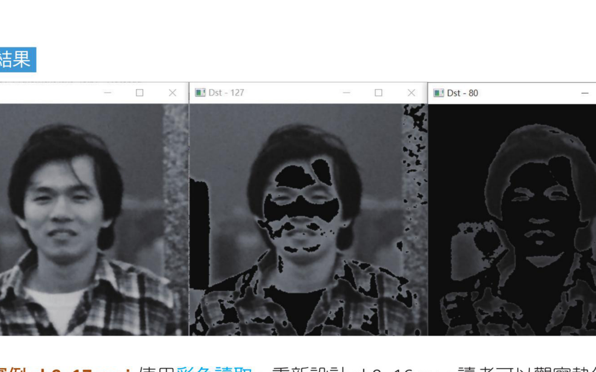
彩色图像使用 TOZERO_INV 的结果，参考原书第 9-17 页。
9-2
Otsu 算法
Otsu 方法会自动寻找适合的阈值。使用时把阈值参数设为 0，并把 cv2.THRESH_OTSU 与阈值类型相加。
程序实例 ch9_18.py：列出原始数组与测试数组
# ch9_18.py
import cv2
import numpy as np
src = np.random.randint(0, 256, size=(5, 5), dtype=np.uint8)
print(f"src =\n{src}")
ret, dst = cv2.threshold(src, 0, 255, cv2.THRESH_BINARY + cv2.THRESH_OTSU)
print(f"ret = {ret}")
print(f"dst =\n{dst}")
程序实例 ch9_19.py：测试 Otsu 回传阈值与数组
# ch9_19.py
import cv2
import numpy as np
src = np.array([[0, 0, 0, 50, 50], [50, 50, 100, 100, 100], [150, 150, 200, 200, 255]], dtype=np.uint8)
ret, dst = cv2.threshold(src, 0, 255, cv2.THRESH_BINARY + cv2.THRESH_OTSU)
print(f"ret = {ret}")
print(f"dst =\n{dst}")
程序实例 ch9_20.py：比较固定阈值 127 与 Otsu 方法
# ch9_20.py
import cv2
img = cv2.imread("jk.jpg", cv2.IMREAD_GRAYSCALE)
ret1, dst1 = cv2.threshold(img, 127, 255, cv2.THRESH_BINARY)
ret2, dst2 = cv2.threshold(img, 0, 255, cv2.THRESH_BINARY + cv2.THRESH_OTSU)
cv2.imshow("Original", img)
cv2.imshow("threshold 127", dst1)
cv2.imshow("Otsu", dst2)
cv2.waitKey(0)
cv2.destroyAllWindows()
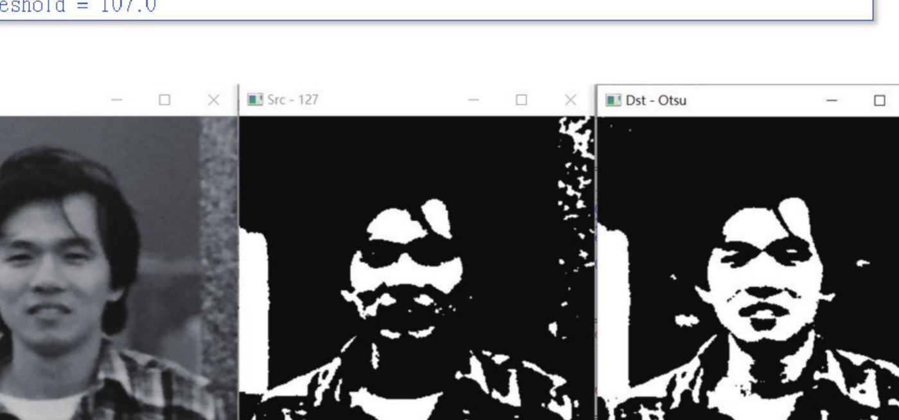
固定阈值与 Otsu 自动阈值对比，参考原书第 9-20 页。
9-3
自适应阈值方法
自适应阈值会根据像素附近区域动态计算阈值，适合光照不均匀的图像。
dst = cv2.adaptiveThreshold(src, maxValue, adaptiveMethod, thresholdType, blockSize, C)
程序实例 ch9_21.py：建筑物图像的自适应阈值
# ch9_21.py
import cv2
img = cv2.imread("minnesota.jpg", cv2.IMREAD_GRAYSCALE)
ret, th1 = cv2.threshold(img, 127, 255, cv2.THRESH_BINARY)
th2 = cv2.adaptiveThreshold(img, 255, cv2.ADAPTIVE_THRESH_MEAN_C, cv2.THRESH_BINARY, 11, 2)
th3 = cv2.adaptiveThreshold(img, 255, cv2.ADAPTIVE_THRESH_GAUSSIAN_C, cv2.THRESH_BINARY, 11, 2)
cv2.imshow("Original", img)
cv2.imshow("threshold", th1)
cv2.imshow("adaptive mean", th2)
cv2.imshow("adaptive gaussian", th3)
cv2.waitKey(0)
cv2.destroyAllWindows()
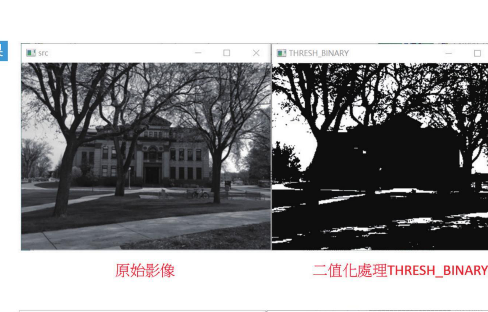
普通阈值与自适应阈值对比，参考原书第 9-21 页。
9-4
平面图的分解
一个 8-bit 灰度像素由 8 个位组成，从最低位 u0 到最高位 u7。把每个位拆出来显示，就得到位平面。
高位平面对视觉影响较大，最低位平面影响较小。
程序实例 ch9_22.py：将原始图像分解为 8 个位平面
# ch9_22.py
import cv2
import numpy as np
img = cv2.imread("jk.jpg", cv2.IMREAD_GRAYSCALE)
planes = []
for i in range(8):
plane = cv2.bitwise_and(img, 2 ** i)
plane = np.where(plane > 0, 255, 0).astype(np.uint8)
planes.append(plane)
cv2.imshow(f"u{i}", plane)
cv2.waitKey(0)
cv2.destroyAllWindows()
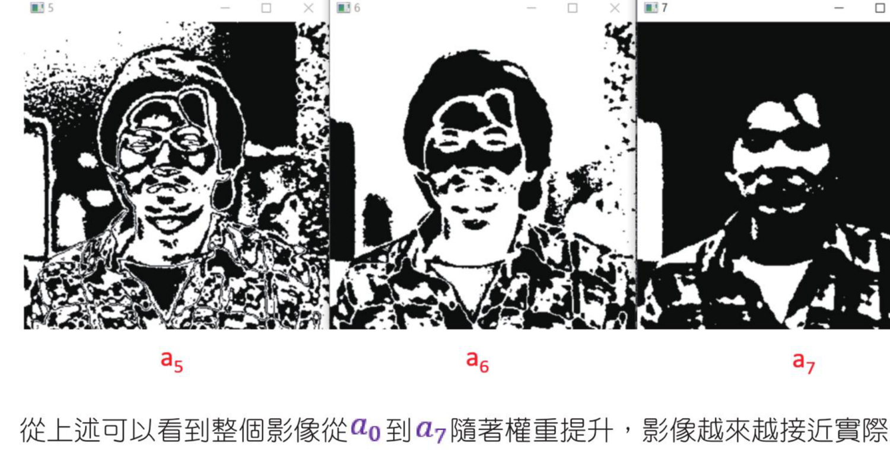
较高位平面保留较明显轮廓，参考原书第 9-22 页。
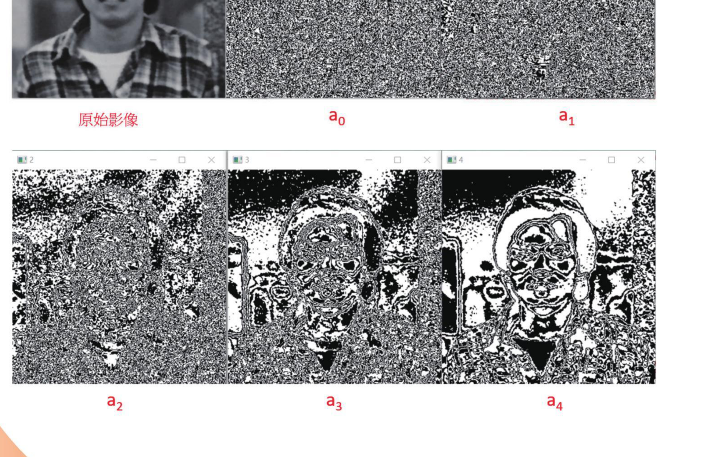
低位平面多为细节和噪声，参考原书第 9-22 页。
程序实例 ch9_23.py：验证最低有效位对视觉影响小
# ch9_23.py
import cv2
img = cv2.imread("jk.jpg", cv2.IMREAD_GRAYSCALE)
img_lsb0 = cv2.bitwise_and(img, 254)
cv2.imshow("Original", img)
cv2.imshow("LSB set 0", img_lsb0)
cv2.waitKey(0)
cv2.destroyAllWindows()
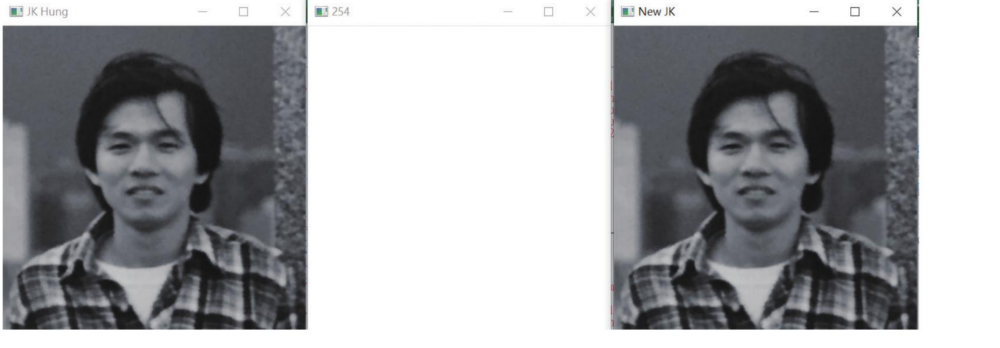
清除最低有效位后视觉差异很小，参考原书第 9-23 页。
9-5
数字水印
数字水印可利用最低有效位实现：先把原图最低位清为 0，再把二值化后的水印压缩到 0 或 1，最后加到原图中。
提取时只要取最低位再放大到 255 即可。
程序实例 ch9_24.py：将水印嵌入原始图像
# ch9_24.py
import cv2
img = cv2.imread("jk.jpg", cv2.IMREAD_GRAYSCALE)
watermark = cv2.imread("copyright.jpg", cv2.IMREAD_GRAYSCALE)
ret, wm = cv2.threshold(watermark, 127, 1, cv2.THRESH_BINARY)
img_clear = cv2.bitwise_and(img, 254)
embedded = cv2.add(img_clear, wm)
cv2.imshow("embedded", embedded)
cv2.imwrite("watermark_image.jpg", embedded)
cv2.waitKey(0)
cv2.destroyAllWindows()
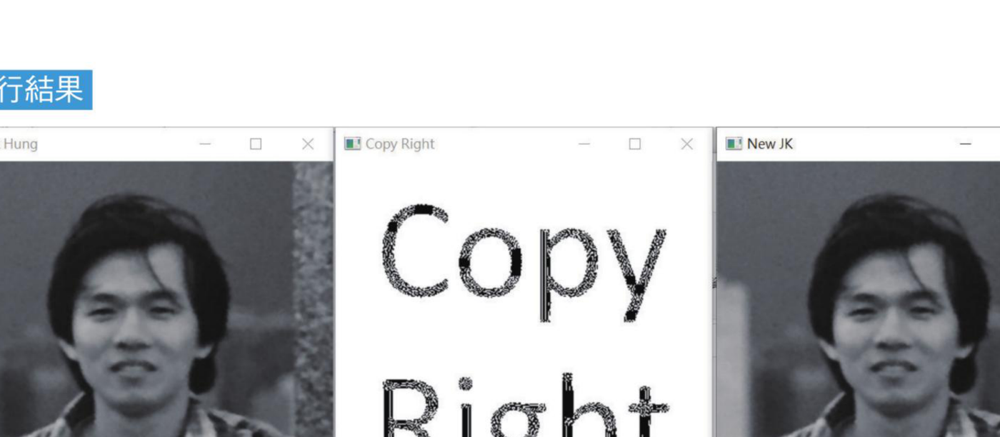
水印嵌入最低有效位后的图像，参考原书第 9-24 页。
程序实例 ch9_25.py：提取数字水印
# ch9_25.py
import cv2
import numpy as np
img = cv2.imread("watermark_image.jpg", cv2.IMREAD_GRAYSCALE)
watermark = cv2.bitwise_and(img, 1)
watermark = np.where(watermark > 0, 255, 0).astype(np.uint8)
cv2.imshow("watermark", watermark)
cv2.waitKey(0)
cv2.destroyAllWindows()
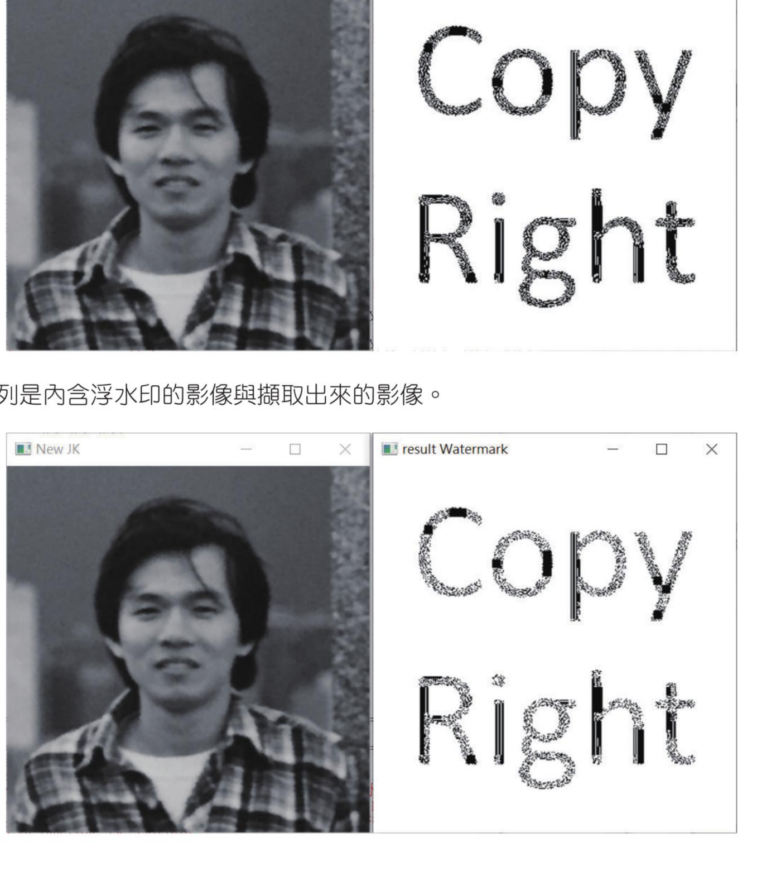
从最低有效位提取出的水印，参考原书第 9-25 页。
1：参考 ch9_4.py，处理 ex9_1.jpg 得到指定二值化结果。
2：参考 ch9_8.py，处理 ex9_1.jpg 得到反二值化结果。
3：扩充 ch9_21.py，加入 THRESH_TOZERO 与 THRESH_TOZERO_INV 的对比。